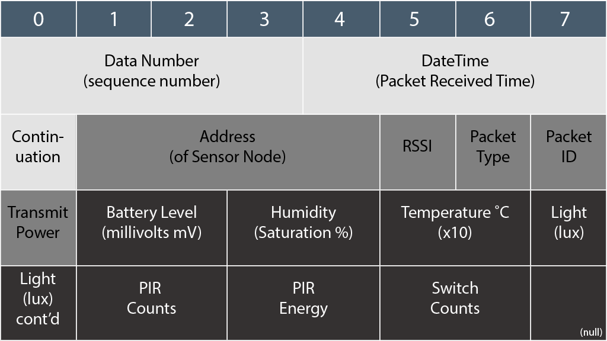

BuildAX Data File Format
CSV
CSV Format data is logged to files named LOGxxxxx.TXT on the SD card when
the logging format is set to plaintext mode. It can also be streamed over the
serial console and telnet.
A CSV formatted packet from a BuildAX Environment Sensor looks like this:
2014/08/29,09:26:05,Bedroom,-48,1,171,0,2911,50.25,220,241,13876,36099,25
Field List
| Field Name | Data Type |
|---|---|
| Date | YYYY/MM/DD formatted ISO 8601 date of the packet |
| Time | HH:MM:SS formatted time the packet was received at |
| Name | The sensor's name, or its address if none has been assigned |
| RSSI | Received Signal Strength Indication, in dBm |
| Type | Received packet type. See Packet Types for full definition |
| Sequence No. | Packet identifier (sensors send packets incrementally) |
| Transmit Power | Sensor-configured transmission power in dBm |
| Battery | Battery level, in millivolts, of the BuildAX sensor |
| Humidity | Relative Humidity (percentage of the saturation vapour pressure) |
| Temp | Temperature in degrees Celsius (°C), multiplied by 10. |
| Light | Luminous flux measurement in Lux |
| PIR Count | Activation counts of the Passive Infra-red sensor |
| PIR Energy | PIR energy last captured |
| Switch | Magnetic switch triggers on the device |
Packet Types
The type of a BuildAX packet indicates its transmission source. Listed here are the currently defined packet types:
| ID | Type |
|---|---|
| 0 | Encryption packet type (not seen in CSV output) |
| 1 | Normal Packet RX'd at sensor transmit interval |
| 2 | Packet sent when PIR sensor triggered |
| 3 | Packet sent when Magnetic Switch triggered |
Further packet types will be defined as more types of BuildAX sensor are developed.
Binary
The binary format can be converted into CSV using the bax2csv utility found
in the OpenMovement repository. The utility is designed to compile on most
machines with a Make and GCC environment.
Binary BuildAX packets are 32 bytes long. The layout of the binary packet is similar to how it is rendered in CSV. The data type widths for an ENV sensor are described below:

The data portion of the packet (darkest part in the diagram) is the part which will vary depending on the packet type. This diagram shows a packet from a BuildAX environment sensor (types 1,2,3), which would vary with (for example) a CO2 sensor.
Other Files
There are a number of different files on the SD card which are used by the LRS:
BAX_INFO.BIN- This binary file contains 16-byte long entries for each sensor paired with the LRS. Contains the encryption key (5 bytes), and the name of each sensor (11 bytes).
ERRORS.TXT- Error log for the router. Although this file is named "Errors", it is also used for logging a timestamp and reset code each time the router is powered on (e.g. reset due to power loss).
DATxxxxx.BIN- Data files containing logged binary sensor data
LOGxxxxx.TXT- Text files containing logged plaintext sensor data
BAX_SURV.BMP- (Specialist option). If the LRS is flashed with a firmware supporting radio-survey mode, it will generate this file containing a survey of the radio spectrum noise at your location. Note that the router is not currently distributed with this firmware as it is a specialist option.